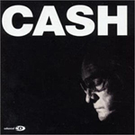
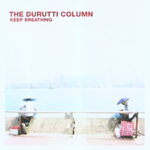

Charles Baudelaire
Sonoridades

Johnny Cash | Man comes aroundpor J. Martínez
Johnny Cash es una figura mítica con la cual no es necesaria la bondad ni la piedad. Su proyecto American, traducido en 4 discos, tiene su punto final en Man comes around, donde el viejo músico hace una serie de covers y reedita algunas de sus viejas canciones, ya anciano, la voz más cascada y una vida completa sobre los hombros. American IV es conmovedor por muchas cosas: la insistencia del gran maestro del folk carcelario en reinventarse, el homenaje que él le rinde a sus otros, el registro de un discurso que se entrama a lo largo de los tracks donde da cuenta de sus años, de sus experiencias y de la inminencia de su muerte. Quizás JC no hubiera previsto que este iba a ser su último disco en estudio, pero, aprés-coup, uno puede encontrar todos los indicios de esa realidad. El punto más alto del disco es la ya muy reconocida versión que hace del tema Hurt, compuesto en 1994 por Trent Reznor, el líder de Nine Inch Nails. Si se lo pone en perspectiva del final de su vida, es una confesión de sus fallas más que un mea culpa, la emoción se cuela bajo la piel y eriza los pelos del cuerpo. En esa versión vive el fantasma de JC, se apropió de la canción, la poseyó y nos la brinda cada vez que a nosotros se nos ocurra emocionarnos con su última explosión de arte. En resumen, un disco que es una puesta de sol, un final que llega lento, bello, inexorable, para cederle el paso a la oscuridad de la noche.
Escuchar Hurt
por Lionel Klimkiewicz
Toda comunidad humana tiene sus mitos. Dicen, por ejemplo, que escuchar una hora por día cualquier obra de Mozart hace bien. Esta afirmación, carente de cualquier rigor científico, será sin duda apoyada por todos aquellos que solemos tomarnos el tiempo suficiente de transitar con nuestros oídos algunas de las múltiples producciones musicales de este músico genial. Hasta podemos llegar al punto de darnos el lujo de intentar convencer, con algún argumento no muy sólido (pero referido, eso sí, con un rostro serio acorde a la circunstancia), a algún desprevenido que se ande interesando en ampliar sus gustos musicales.
Sin duda este “mito”, como cualquier otro, porta alguna verdad. En este caso, podemos inferir que esa verdad hace referencia a sensaciones que nos pueden generar en el cuerpo las melodías de don Amadeus. Por supuesto que esta opinión puede ser catalogada rápidamente de ser en extremo subjetiva, lo que resulta una objeción imposible de rebatir. Siempre podemos utilizar un argumento falaz, pero convincente, a la hora de defender nuestra idea: ¿Acaso mucha gente se dedica a escuchar música de Mozart una hora por día como para negar que esto sea cierto?
Ahora bien, escuchar música requiere tiempo (para otro momento quedará la discusión sobre qué es escuchar música). Y en esos momentos donde estamos sentados cómodamente en un sillón, sabiendo que no hay circunstancias o ruidos que nos interrumpan o molesten, con un whisky o una copa de vino en la mano, donde podemos olvidarnos de esas realidades cotidianas que muchas veces lo único que hacen es hacernos perder tiempo, y nos dejamos absorber por la melodía mozartiana elegida para la ocasión, nos puede ocurrir algo que ninguna habitación herméticamente cerrada, ningún celular apagado, ningún tipo de aislamiento puede evitar: no podemos lograr que una pregunta nos deje de aparecer en nuestra cabeza y nos distraiga un instante: ¿cómo habrá hecho Mozart para componer esto? ¿En que momento se habrá inspirado?
La insistencia de este tipo de preguntas suele ser el punto de partida de un creciente interés por saber algo sobre la vida de estas personas inigualables, que admiramos íntimamente, y es así entonces como un día nos encontramos en la avenida Corrientes comprando algunas biografías que aunque nunca nos terminan de dejar conformes, por lo menos logran hacernos sentir, una vez leídas, que conocemos a nuestro querido artista más íntimamente, que hasta podemos entablar con ellos una relación de amistad de la cual podremos disfrutar a lo largo de nuestra vida.
En una de estas biografías, Maiztegui Casas hace referencia al proceso de composición de Mozart, respondiendo un poco a estos interrogantes a los que hago referencia, y que por eso me gustaría compartir:
“Un famoso texto de Fredrich Rochlitz transcribe una conversación en el curso de la cual Mozart le explicó su forma de componer:
«Cuando me encuentro en buena forma física, ya en un coche durante un viaje, ya dando un paseo después de cenar, o si no consigo dormirme, las ideas me llegan a raudales. No sé de dónde vienen ni cómo llegan, pero ahí están. Guardo entonces las que me gustan, las canto en voz baja-o al menos eso dicen- y poco a poco las voy convirtiendo, en mi cabeza, en algo coherente. La cosa avanza, yo voy desarrollando mentalmente esas ideas, veo todo cada vez con mayor claridad hasta que, en un momento, la obra queda terminada dentro de mi cabeza. Puedo abarcarla de una sola mirada, como si se tratase de un cuadro o de una estatua. No veo la obra en su discurrir, como cuando se representa o ejecuta, sino como si fuese un bloque. Y esto es un regalo de Dios. La invención, la elaboración, todo ello es para mí un sueño magnífico: pero cuando llego a percibir la totalidad de la obra en su conjunto el momento es indescriptible.
(…) Se equivocan totalmente lo que hablan de lo fácil que me resulta componer; os aseguro que no debe haber en el mundo nadie que se haya esforzado tanto como yo para poder dominar el arte de la composición. No sería fácil encontrar un compositor al que yo no haya estudiado con toda aplicación, en muchas ocasiones y de principio a fin»”.
No sé si estas palabras llevarán a alguien a escuchar a Mozart, pero al menos aquel que sí lo hace tendrá un motivo menos para que su pensamiento le interrumpa un momento de placer.
por J. Martínez
Massive Attack no sólo hace música, sino que sostiene su modo de hacerla. Heligoland, último álbum de la banda de Bristol, vuelve a demostrarlo. Y no sólo por la constante exploración sonora de la banda, su brillante y oscuro sonido característico, ni por la conocida, transitada y renovada línea musical que hace trazo desde sus comienzos hasta ahora. Lo que en Blue Lines fue un manifiesto del modo polifónico, del vitraux sonoro (si eso es posible) traducido en la participación de cantantes y músicos “ajenos” al corazón del grupo, en Heligoland vuelve en toda su dimensión, tanto como plumas de pavo real como de apuesta, para el retorno a las bateas, 7 años después de 100th Windows (aquel disco plateado que 3-D Del Naja sacara sin Daddy G Marshall, que retorna en esta nueva producción). La presencia de la tan conocida y particular voz de Horace Andy, Tunde Adebimpe, (la siempre maravillosa) Martina Topley-Bird, Damon Albarn y Adrian Utley son los puntos fuertes del menú que se completa con una lista tan extensa como la ya escrita. Heligoland comienza con uno de sus mejores tracks, Pray For Rain, donde Adebimpe demuestra con creces el motivo de su convocatoria, y ofrece una superficie cuyos puntos más bajos podrían calificarse –con malicia– como “un poco más de lo mismo”, lo que en Massive Attack es garantía de placer para el oído y emoción para el alma.
Escuchar Pray for Rain
por Van Gogh i Tysson
a la memoria de Hank Jones
Los músicos ahogados se valieron para ello de distintas sustancias, yendo de las legales a las ilegales y de las más sabrosas a las más asquerosas. Recordamos a los macerados en alcohol, barbitúricos (¡gran palabra!), cocaína, heroína e, incluso, el propio vómito. Pero también –y ahí radica, a veces, la tan buscada y admirada originalidad en el arte– se recurre a lo más elemental y básico para conmover. Tan básico como que es el 80 % de nuestros cuerpos, tan elemental como que le llamamos el líquido elemento. Vaya pues este obituario-homenaje a los músicos ahogados en agua.
Cronológicamente, nos encontramos con el naufragio del S. S. Ville de Havre que transportaba a Felipe Larrazábal (1818-1873), uno de los compositores venezolanos más importantes del siglo XIX. Y, ya en 1912, vemos flotar los cuerpos cubiertos de fracs de R. Bricoux, J. Preston, H. Hartley, T. Brailey, J. Hume, G. Krins, J. Woodward y P. Taylor, después de haber amenizado hasta el final (así cuentan) el hundimiento del Titanic. Cerca de ahí, en el canal de la Mancha, el submarino nazi SB UB 29 torpedea y parte en dos al S. S. Sussex que transportaba a Enrique Granados (1867-1916), quien volvía de estrenar su suite para piano Goyescas en el Metropolitan Opera House de Nueva York y que, con el tiempo, le daría su nombre a una de las calles más bonitas de Barcelona (sobre todo entre la plaza Letamendi y la calle Diputaciò).
1969, en los albores de la era de la adicción a las botellas de Evian, una coqueta piscina llena de agua clorada anega a Brian Jones, para alegría (según reza la teoría conspirativa) de Richard y Jagger, que ya le habían birlado la novia y evitaban la futura competencia en la metrosexualidad incipiente, sin ahondar en cuestiones de celos creativos.
Dennis Wilson, luego de cohabitar con el Clan Manson, e inmediatamente después de haber fracasado en su intento de ahogarse en alcohol, logra inundar su cuerpo con las cálidas aguas saladas del Pacífico el día de San Herodes de 1983, lastrando consigo la carrera de los Beach Boys.
Dulce y movediza fue el agua que colapsó a Jeff Buckey en el río Wolf, en un episodio ambiguo y confuso que ocurrió allá por 1997. Vale la pena destacar su único disco editado en vida: Grace (CBS/Sony, 1994).
Un poco más insipida, más mineral y más estanca fue el agua del lago Ingarö que consiguió elevar a 100 % el nivel de agua en cuerpo del gran pianista Esbjörn Svensson (mi ahogado en agua preferido) mientras buceaba a sus 44 años. Corría junio del 2008. Y ahí nos quedan quince años de carrera, una docena de discos, un DVD y algunos cuidados clips de E.S.T., el poderoso trío sueco que integraba junto al contrabajista Dan Berglund y el bateria Magnus Öström , que supieron resolver la contemporaneidad del jazz con el pop y la electronica como pocos. Para ir haciendo agua la boca se puede ir paladeando con Good Morning Susie Soho (ACT, 2000) o Strange Place for Snow (ACT, 2002).
A modo de despedida, los invito a cliquear en "From Gagarin’s Point of View", subir el volumen y dejar bajar a un salobre gotón a encontrarse con todos ellos. Todas las aguas van al río, todos los ríos van al mar...
;

The Durutti Column | Keep Breathingpor J. Martínez
The Durutti Column llega a este disco con más de un cuarto de siglo de historia sobre sus espaldas. Más que perseverancia e insistencia, hay que reconocerle a su líder y guitarrista, Vinni Reilly, una apuesta a un trabajo sostenido. Descubrir la música de Durutti Column es descubrir el peculiar sonido de la guitarra de VR, su marca distintiva. Una banda que, crecida en la oleada británica de Manchester, quedó relegada a un injusto segundo plano. Keep Breathing es un eslabón más en la cadena productiva de este proyecto; escucharlo es entrar en un muy personal mundo simbólico, con temas que no eluden la sutileza, el refinamiento sonoro, la apuesta, el charme... Convengamos: no es fácil transmitir sonidos, imágenes, palabras con un sello personal, con una lengua propia. Durutti Column, en muchos momentos, lo consigue.
Escuchar Nina
Nicolás Guillén (1902-1989) es, junto a José Martí, uno de los poetas cubanos por excelencia. Su compromiso con la palabra y la negritud, se vio reflejado en el particular uso de una métrica poética dominada por el ritmo de la música negra. Una muestra de ello es el poema Canto Negro que presentamos leído por su autor.
Dylan Thomas (1914-1953) fue uno de los grandes poetas malditos de la literatura de habla inglesa. Galés de origen, fue famoso por sus magníficas borracheras, su militancia bohemia y una voz cautivante. De esto último podrán dar fe al escucharlo leer su maravilloso poema Do not go gentle into that good night, en el que exhorta a ejercer la furia contra la muerte de la luz..
Drummond de Andrade (1902-1987) es el poeta más destacado del modernismo brasilero, considerado uno de los mayores poetas de la historia de Brasil por la crítica de su país. Su trabajo poético fue paralelo a sus otras actividades: el periodismo y la política. Fiel a sus ideales de un nacionalismo popular, rechazó su postulación al Nobel de Literatura y los premios que le otorgaron durante los gobiernos militares. Aquí podrán escucharlo leyendo su poema Memoria.